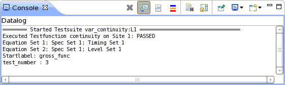
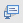
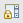
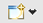

Console view: Data log console
The data log console displays data logging messages.
The data log console is not displayed at startup of SmarTest. To display the data log console click the icon and choose Datalog.

The toolbar of the console contains the following icons:
Icon |
Function |
|---|---|
Closes the currently opened console. |
|
 |
Forces the console to remain in background even if new messages occur. |
Inserts a separator line in the console text. |
|
Compares the tester status of the last two saved tester status logs and generates a change log. |
|
Prints the current settings of all instruments to console. |
|
Switches text coloring on or off. Switching text coloring off can increase the console output speed when very large amounts of text are output. |
|
Clears the content of the currently opened console. |
|
 |
Locks scrolling. When new messages occur, the console does not scroll down to the new messages. |
Forces the console to remain on top of other views. |
|
If multiple consoles are opened, you can select which one is displayed. |
|
 |
Opens a new console. |
Functional changes
- Introduced before SmarTest 6.3.2
- SmarTest 7.1.3: (Release 7.1.3.2) Added text coloring switch